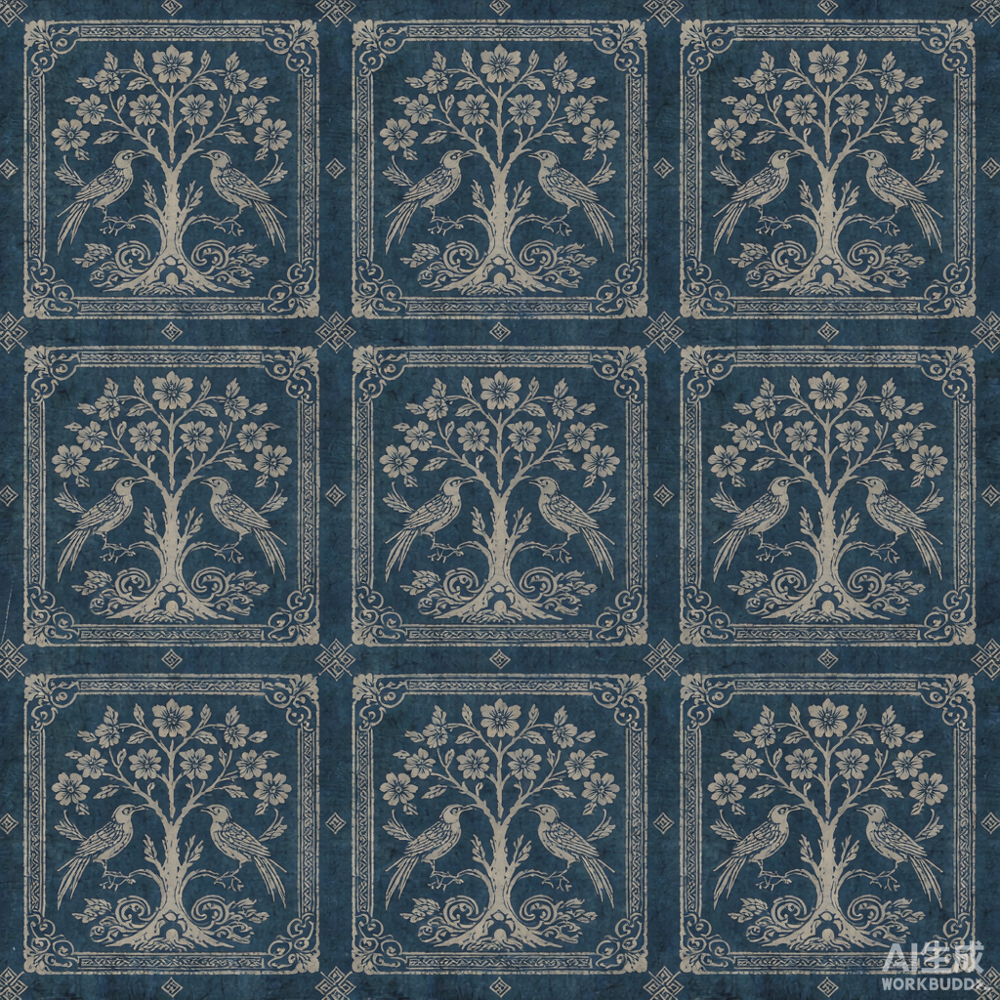
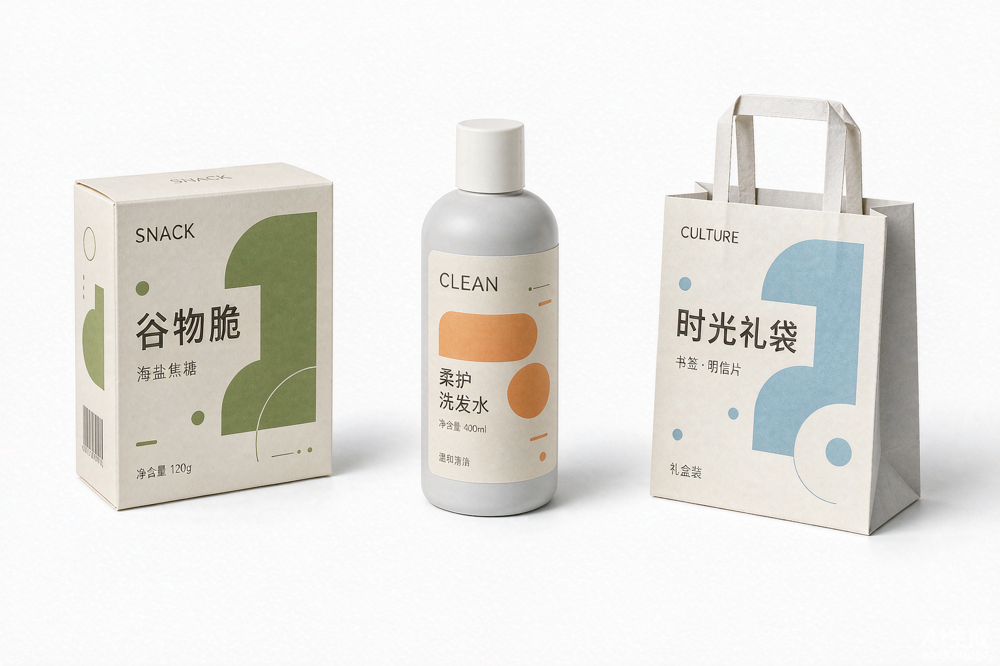

纹
输入需求，智能体会自动判定设计体系
它会先判断该走「国风非遗」还是「现代产业」，再从对应分区检索素材，最后输出可执行的设计简报与生图提示词。
面向多产业应用的包装设计 AI 智能体 · 双体系素材检索数据库
它会先判断该走「国风非遗」还是「现代产业」，再从对应分区检索素材，最后输出可执行的设计简报与生图提示词。
团队导入的 18 张包装参考图需要标注体系归属（国风 / 现代）。标注完成后，智能体在对应模式下才会把它们作为风格参考图参与生图；未标注的图不会被自动调用。标注结果保存在本机浏览器，换电脑需重新标注或导出。
武阳春雨是浙江武义的区域公用品牌，2025 年品牌估值 56.28 亿元，全县茶园 12.82 万亩、全产业链产值 62.7 亿元。它在本项目中仅作为验证案例：同一产品分别用两套体系各出一版包装，用来检验智能体与数据库的可用性。
下面这组图是「素材库参考图 + 提示词」真正调用图像模型生成的结果，不是预存演示图。国风版以蓝夹缬纹样素材为参考，现代版以袋装模板素材为参考。

蓝夹缬纹样经采集、整理与参数标注后进入国风分区素材库，成为智能体可直接调用的资产（编号 GF-P 系列）。纹样不再只是"被展示"，而是能被反复检索、匹配并组装进新方案。

同一套现代体系可平移到食品、日化、文创等不同产业，换色板与模板即可复用，刀版与规范保持一致。
商业包装设计长期存在三类混乱：国风非遗元素生硬堆砌、国风与现代风格混杂、素材检索低效。本项目把设计方案明确拆成国风非遗与现代产业两套互不混淆的体系，再用一个垂直领域的 AI 智能体配合分区素材数据库把它们跑通。
输入「武阳春雨茶国风礼品包装」→ 自动切国风模式，调用蓝夹缬纹样、传统配色与礼盒版式；输入「电商袋装茶叶、平价快消」→ 切现代模式，调用简约扁平规范，不会把非遗纹样硬堆上去。两套规则内置在智能体里，主动约束风格，防止混杂。
素材库人工收集、筛选、分类、标注，分国风区与现代区两个独立素材池。智能体按当前模式只在对应分区检索，素材带独立编号可溯源 —— 不会像通用搜图那样拉来无关图片。
输出含版式建议、色彩方案、纹样选用、字体、工艺、尺寸与材质规格、印刷与合规注意事项，最后生成包装效果图。效果图由方案参数实时渲染，不是预存图。
用同一款武阳春雨茶分别生成国风版与现代版，验证整套工具可用。茶只是测试样例，同一套体系可平移到食品、文创、日用品等产业。
核心是非遗文化（蓝夹缬），主打文化表达，面向礼品、文创、农产品。智能体在此模式下遵循非遗纹样使用规范 —— 纹样有最小可读尺寸、强调色有面积上限、人物纹样不用于小规格包装，不生硬堆砌。
核心是量产、电商、市场销售，简约扁平化，不强行加传统元素。智能体在此模式下优先考虑印刷成本、货架展示效果与合规（GB 23350 空隙率、ISO 12647 色彩、刀版结构）。
蓝夹缬技艺 2011 年列入国家级非遗名录（编号 Ⅷ-192），核心工艺集中在浙南。把纹样、配色、肌理参数化入库后，非遗元素才能被反复检索调用，而不只是被展示。
接入真实大模型做需求理解、接入向量检索做语义匹配、把刀版图生成与 3D 打样并入链路，并把素材库扩展为团队可协作维护的在线数据库。
数据与来源说明：包装行业规模数据参考 2025 年行业统计（全国包装行业规模以上企业 20230 家、营业收入 20546.27 亿元）；武阳春雨品牌与茶产业数据来自武义县政府公开答复与县茶业协会 2025 年度盘点；蓝夹缬工艺与传承信息来自温州市文化广电旅游局及瑞安市公开报道。本页配图为 AI 生成的效果示意，非实物拍摄。